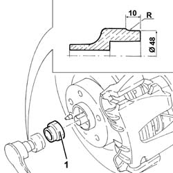
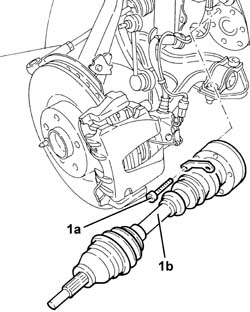
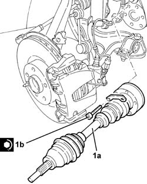
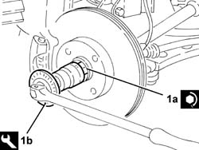
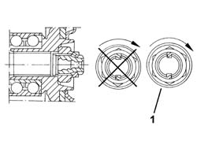

2710A10 drive shaft with joints (one), l/h or r/h - r + r
- Path
- Procedures > 27 AXLE > 2710 FRONT AXLE > 2710A drive shafts and joints > 2710A10 drive shaft with joints (one), l/h or r/h - r + r
- Kind
- repair procedure (removal / refitting; the operation number is the code)
- Applies to
- all engines; all production periods
- Interactive page
- https://sloeber94.github.io/elrnDB-a147/en/#/3025181
Applies to: all engines; all production periods
 Removing
Removing
 Refitting
RefittingPosition the vehicle on the ramp.
Proceed with removal 4450B10 Front WHEEL (one) - R.R. .
1. Remove the two bevels and undo the nut securing the hub nut to the drive shaft.

Applies to: all engines; all production periods
Proceed with removal 4410A80 damper lower fork - r r .
1. Undo the bolts (1a) and remove the driveshaft, complete with joints (1b).

Applies to: all engines; all production periods
Refitting
Removing1. Place the driveshaft, complete with joints (1a), back in its housing and fix it tightening the bolts (1b) the recommended torque.
 | Fastening | Component | Ø | Value (daNm) |
|---|---|---|---|---|
1b | - | - | - | - |
| Fastening | Component | Ø | Value (daNm) |
|---|---|---|---|---|
1b | - | - | - | - |

Applies to: all engines; all production periods
Proceed with refitting 4410A80 damper lower fork - r r .
Applies to: engines: 1.6 TS, 2.0 TS, 1.9 JTD 8V, 1.9 JTD 16V; all production periods
1. Tighten the nut (1a) fixing the wheel hub to the drive shaft to the recommended torque, using the angle tightening tool (1b).
| Fastening | Component | Ø | Value (daNm) |
|---|---|---|---|---|
1a | Nut | FRONT HUB WITH BEARINGS | M24 | (Driveshaft side) 6.7 ÷ 7.4 + 60 ÷ 64 |
 | Name | Country |
|---|---|---|
1b | Protractor | 1.860.942.000 |

Applies to: engines: 3.2 V6; all production periods
1. Tighten the nut (1a) fixing the wheel hub to the drive shaft to the recommended torque, using the angle tightening tool (1b).
| Fastening | Component | Ø | Value (daNm) |
|---|---|---|---|---|
1a | Nut | FRONT HUB WITH BEARINGS | M24 | (Driveshaft side) 6.7 ÷ 7.4 + 39 ÷ 43 |
| Name | Country |
|---|---|---|
1b | Protractor | 1.860.942.000 |
Applies to: engines: 3.2 V6; all production periods
1. Bevel the collar of the nut in two places as shown in the figure.

Applies to: engines: 3.2 V6; all production periods
Proceed with refitting 4450B10 Front WHEEL (one) - R.R. .
Position the vehicle on the ramp.